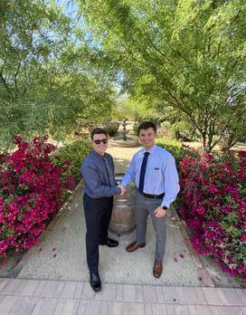

1 / 3

2 / 3

3 / 3
Chris is professional who is working at Union Pacific Railroad as a Senior Commercial Consultant on the AIM Team. He serves as a SCRUM product owner on the GENESISelite project, which seeks to redevelop the price capture system from a desktop application to a web application. He graduated with multiple bachelor degrees in Finance, Economics, Marketing, and Information Systems Management in May of 2022 from Northern Arizona University. Chris is currently working on his MBA and his MS.MIS at the University of Nebraska at Omaha. He is very excited that you are visiting his professional website. Please feel free to look around!